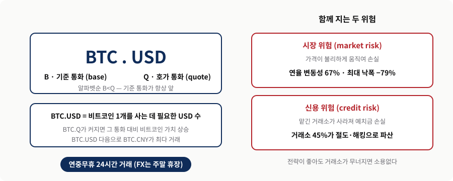
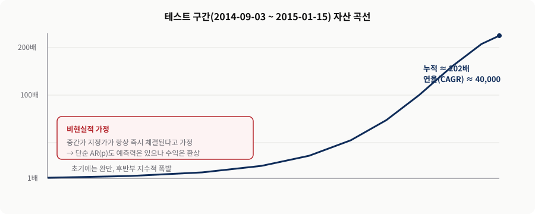
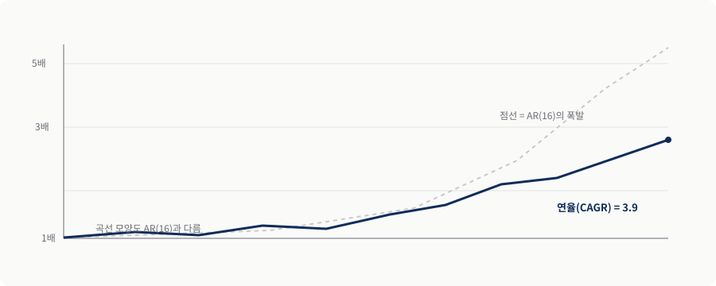
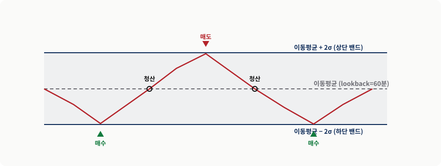
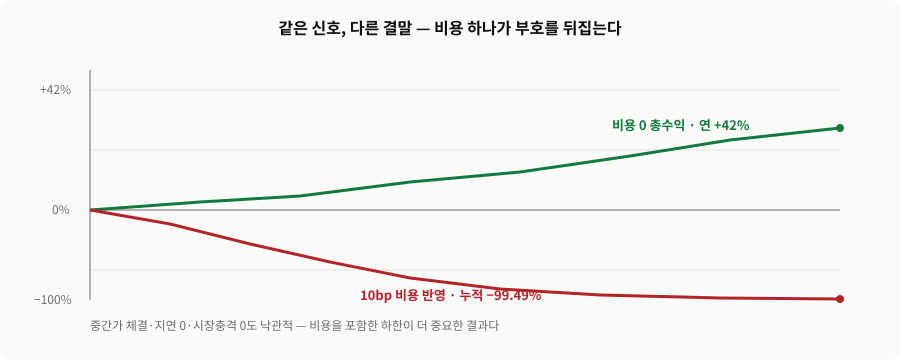
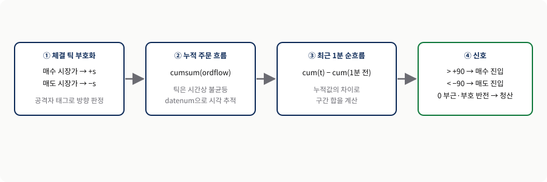
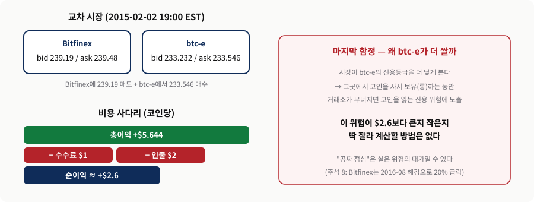
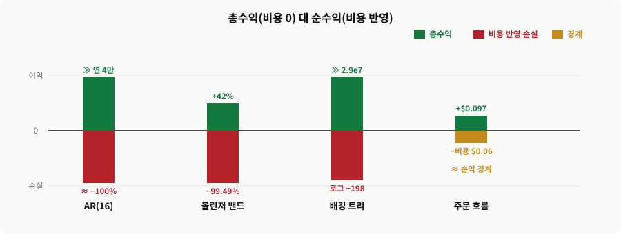

기회
미성숙한 시장
- 기본적 요인의 영향이 작아 기술적 분석의 무대
- 비효율이 남아 차익거래 기회가 보임
머신 트레이딩
낯선 시장에 앞 장의 무기를 겨누다 — 시계열·AI·주문 흐름·차익거래, 그리고 비용의 현실
비트코인은 3·4·6장의 도구를 가장 단순한 무대에 겨눠 보는 실습장입니다. 결과마다 “어떤 체결 가정 위의 숫자인가”를 물어야 합니다.
기회
함정
오늘의 질문 — 신호가 맞는 것과 그 신호로 돈을 버는 것은 왜 다른가?
낯선 시장을 만난 트레이더가 무기를 꺼내 드는 순서를 따라갑니다.
AR·ADF로 구조를 찾고 볼린저로 되돌림을 노림(§7.2–7.3)
직관 없이 기계에 묻고, 부호 있는 거래량을 읽음(§7.4–7.5)
공짜 점심과 신용 위험, 그리고 비용의 현실(§7.6–7.7)
발표의 약속 — 기법 목록이 아니라 “비용을 넣으면 무엇이 남는가”라는 판단 기준을 가져갑니다.
통화·비트코인은 짧은 시간 척도에서 기본적 요인에 거의 영향받지 않아, 기술적 분석의 이상적 놀이터입니다.
왜 예측 요인이 안 되나
넓은 뜻의 기술적 분석
관통하는 질문 — 예측력과 수익성은 다르다. 큰 숫자 뒤의 체결 가정을 의심하라.
트레이더에게 비트코인은 EUR·AUD처럼 또 하나의 통화쌍 B.Q일 뿐입니다.
BTC.USD = 비트코인 1개를 사는 데 필요한 USD 수. 비트코인은 늘 기준 통화.
주말 휴장하는 FX와 달리 쉬지 않고 거래. 거래소는 40곳 이상.
BTC.CNY는 규제 대상, BTC.CNH 거래소는 없음 → 실용성 제한.
정의 — 낯선 시장도 좌표(B.Q)에 올려놓으면 익숙한 통화 거래 문제가 됩니다.
시장 위험(가격)과 신용 위험(거래소)을 같은 무게로 봐야 합니다.

변동성과 첨도(꼬리위험)가 둘 다 높습니다. MXN·SPY·HYG와 나란히 보면 격차가 뚜렷합니다.
| 지표 | BTC.USD | MXN.USD | SPY | HYG |
|---|---|---|---|---|
| 변동성(연율) | 67% | 16% | 20% | 13% |
| 최대 낙폭 | −79% | −49% | −55% | −34% |
| 첨도(연율) | 7 | 8 | 1 | 4 |
판단 — 큰 수익 기회는 −79% 낙폭과 짝을 이룹니다. 리포트 표 2에 전체 수치가 있습니다.
모르는 상품의 첫 단계는 ARIMA 시계열 분석입니다. BTC.USD 1분봉 중간가가 강한 평균회귀를 보입니다.
직전 16분을 되돌아봄. φ₁ = 0.685, 표준오차 0.0001.
귀무가설 기각 → 정상적·평균회귀적 시계열.
평균에서 벗어나면 되돌아오려는 성질 → 전략 여지.
메커니즘 — AR(16)·ADF가 “여기에 예측 구조가 있다”를 먼저 확인합니다.
AR(16) 방향대로 매매하면 CAGR 40,000 — 중간가 즉시 체결 가정에서만 성립합니다.

가격이 평균회귀·정상적이므로 단순 평균회귀 전략을 그대로 옮길 수 있습니다.
규칙
설정
정의 — 이동평균·표준편차는 수익률이 아니라 가격에 대해 계산합니다.
ARMA(3, 7)는 AR 항에 과거 오차(MA)를 더합니다. CAGR 3.9로 AR(16)보다 훨씬 낮습니다.

밴드는 이동평균 ± 2σ입니다. 가격이 밴드를 오가며 되돌림 신호를 만듭니다.

비용 0 총수익은 연 42%지만, 포지션 전환마다 10bp를 넣으면 누적이 −99.49%로 무너집니다.

호가 바운스를 피해 다시 중간가를 쓰고, 예측 변수는 1·5·10·30·60분 봉 수익률로 바꿉니다.
| 기법 | 교재의 결과 | 주의 |
|---|---|---|
| 배깅 회귀 트리 | 표본외 수익 비현실적으로 높음 | 호가 반영 재검증 필요 |
| 서포트 벡터 머신 | 학습·테스트 모두 음(−) 수익 | 시장이 다르면 정반대 |
| 순전파 신경망(100개 평균) | 트리만큼 놀라운 표본외 수익 | 즉시 체결 가정 동일 |
경고 — “SPY에서 통한 것이 BTC에서 더 잘 통하리라”는 지레짐작은 금물입니다. 리포트 표 3 참조.
주문 흐름은 부호가 붙은 거래량입니다. 능동적으로 시장을 때린 쪽을 부호로 기록합니다.
매수 시장가 체결 +s, 매도 시장가 체결 −s.
BitStamp BTC.USD 피드가 방향을 알려줌. 마이크로초 타임스탬프.
편도 0.097달러 · 2014-12 336건 · 코인당 32.54달러.
정보 — 이 시간 프레임에서 주문 흐름은 비트코인의 합리적 예측 변수입니다.
누적값의 차이로 최근 1분 순흐름을 싸게 계산하고, 임계값과 비교해 진입·청산합니다.

최근 1분 순흐름을 임계값과 비교해 포지션을 바꿉니다. 반전 시 청산과 신규 진입을 함께 셉니다.
if (ordflow_lookback > entryThreshold) % 강한 매수세 → 롱
if (pos < 0) dailyPL = dailyPL + (entryP - tradePrice(t)); end
entryP = tradePrice(t); pos = 1;
elseif (ordflow_lookback < -entryThreshold) % 강한 매도세 → 숏
if (pos > 0) dailyPL = dailyPL + (tradePrice(t) - entryP); end
entryP = tradePrice(t); pos = -1;
else % 잦아들면 청산
pos = 0;
end결과 — entryThreshold 90, exitThreshold 0이면 2014-12 총손익 32.54달러(편도 0.097달러). 전체 코드는 orderFlow2.m.
한 거래소 매수호가가 다른 거래소 매도호가보다 높은 교차 시장에서만 무위험 이익이 가능합니다.
성숙 시장
비트코인
판단 — 남는 2.6달러가 정말 이익일까? 마지막 함정은 신용 위험입니다.
btc-e가 더 싼 이유는 낮은 신용등급입니다. 그곳 롱 보유의 신용 위험은 계산식으로 딱 잘라지지 않습니다.

공식 아카이브를 checksum으로 고정해 재현(검증 25/25)했습니다. 화려한 총수익은 10bp 비용에서 거의 사라집니다.

수익의 실재 여부는 실행 소프트웨어·API 효율·수수료·거래소 신용도에 달려 있습니다.
시계열·AI를 처음 보는 시장에도 그대로 적용.
어떤 시장에서나 통하는 단기 예측 지표.
더 성숙한 시장에도 응용할 국경 간·거래소 간 원리.
결론 — 먼저 확인할 것은 모형 점수가 아니라 데이터 계약·시간 단위·체결 비용·거래소 생존입니다.
두 연습문제는 이 장의 한계를 스스로 밀어 보게 합니다.
연습문제 7.1
연습문제 7.2
확장 — 단순화 버전과 원래 버전의 차이가 곧 “체결 가정”의 값입니다.
정답을 외우기보다 판단 근거를 말할 수 있는 질문으로 만듭니다.
AR(16)의 CAGR 40,000이 비현실적인 이유를 체결 가정으로 설명할 수 있는가?
볼린저 +42%가 10bp 비용에서 −99.49%로 뒤집히는 까닭은 무엇인가?
거래소 간 차익거래에서 “남는 2.6달러”를 무엇이 지우는가?
토론 — 네 전략 중 비용을 견디고 살아남을 후보와 그 이유를 고르세요.
KEY TAKEAWAYS
시계열·AI·주문 흐름을 낯선 시장에도 그대로 겨눌 수 있다.
큰 총수익은 대부분 체결 가정이며, 10bp면 대부분 사라진다.
모형 점수보다 데이터 계약·시간 단위·비용·거래소 생존이 먼저.
Q&A